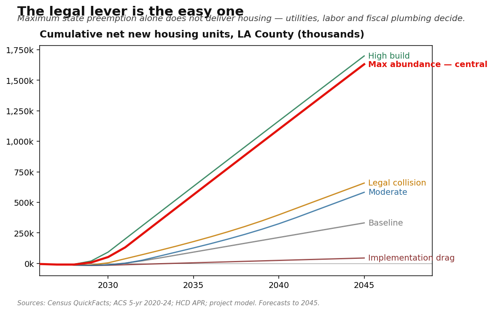
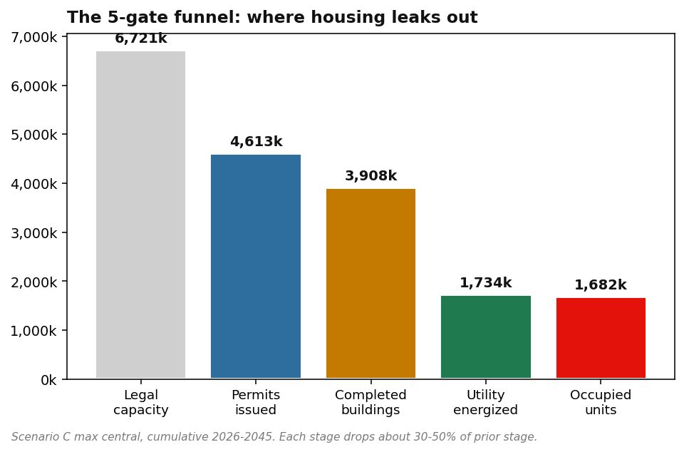
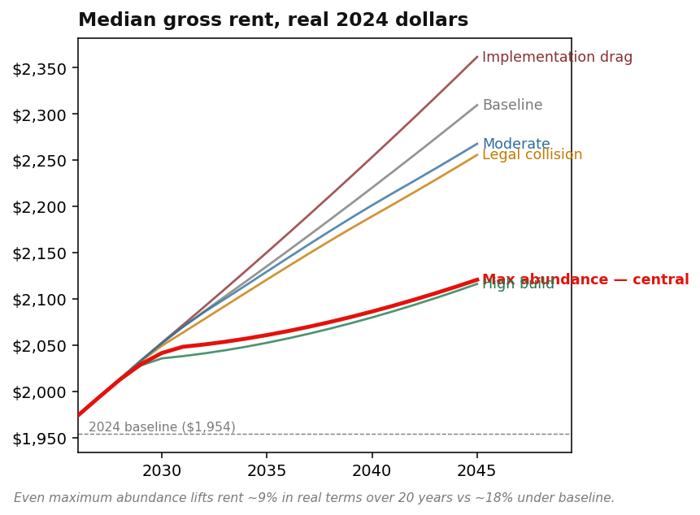
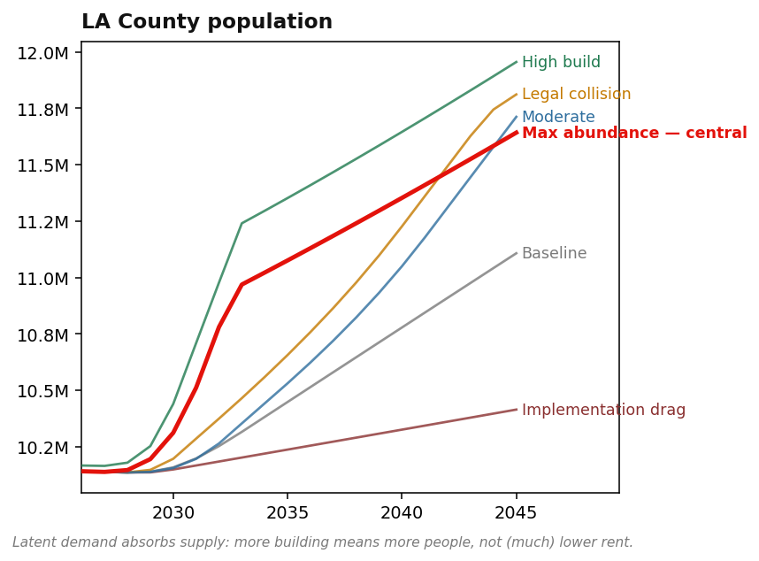
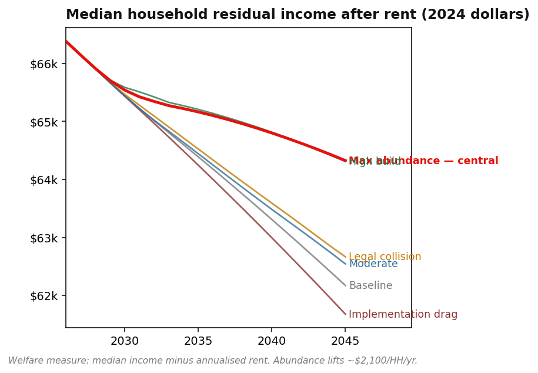
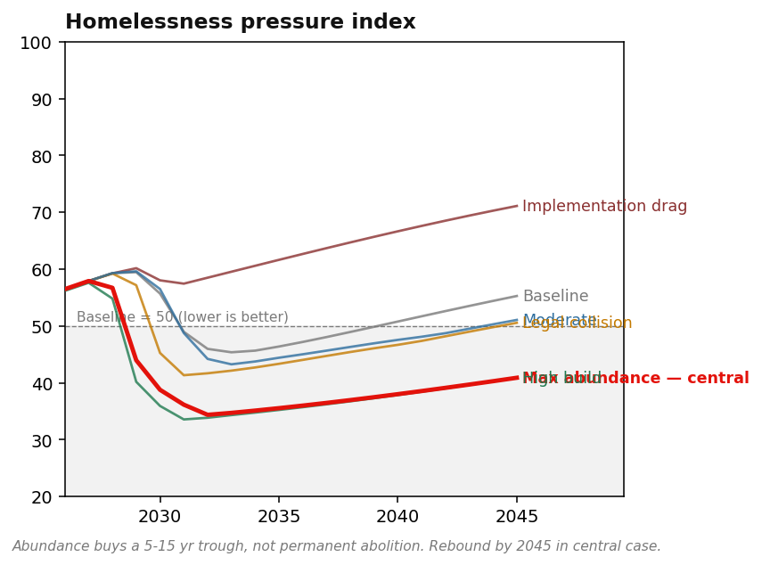
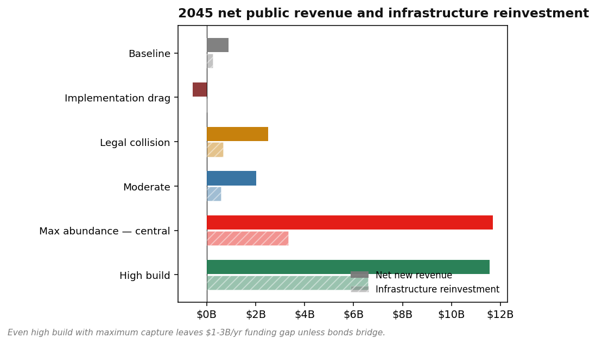
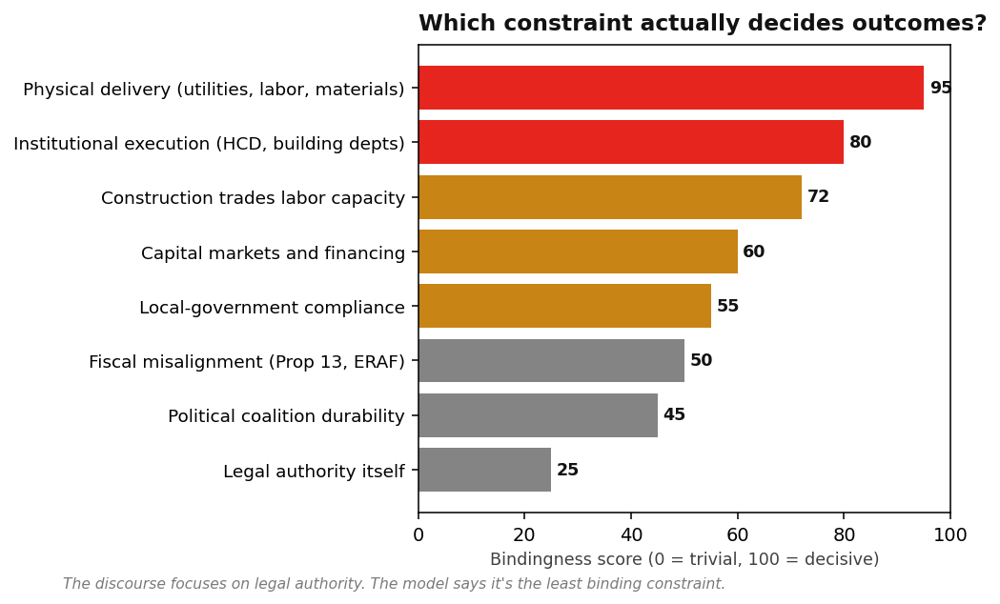

The legal lever is the easy one
If California enacted the most aggressive supply-side housing reforms it could pass without a constitutional amendment, what would actually happen in Los Angeles County by 2045? Mostly: not what the discourse predicts.
1.6m
Net new housing units by 2045 in the central reform case
38×
Spread between best and worst execution outcomes — same legal package
+9%
Real rent rise under abundance — vs +18% under no-reform baseline
$11.7b
Annual fiscal dividend by 2045, of which only $3.3b funds infrastructure
01The headline finding
Across six scenarios, identical reforms produce wildly different outcomes depending on how — and whether — institutions execute.

How to read it: Each line is a scenario assuming the same Maximum Statutory Abundance reform package passes — but with different assumptions about utility execution, fiscal capture, and local compliance. The red Max abundance line is the central case. Implementation drag is what happens if the package passes but utilities, labor and HCD enforcement do not. The 38× spread is the model's central message: legal reform is necessary; execution is decisive.
02The five-gate funnel: where housing leaks out
Even under maximum legal preemption, only one in eleven legally allowed units actually gets occupied.

Legal capacity to occupied units, cumulative 2026-2045, Scenario C max central case. Each stage drops 25-50% of the prior stage. Building permits convert to completions; completions wait for utility energization; energization waits for occupancy. Each gate is a real institutional process — not an artifact of pessimism.
Why the funnel matters
The discourse around California housing policy treats "passing the law" as roughly equivalent to "building the housing." It is not. Each of the five funnel stages — entitlement, permit, completion, energization, occupation — has its own physical, financial, and institutional bottlenecks. Most policy analysis stops at stage two.
- Stage 1 → 2: Local resistance, litigation, ministerial-share gaps
- Stage 2 → 3: Permit processing capacity, building department staffing
- Stage 3 → 4: Construction labor, materials, financing, insurance
- Stage 4 → 5: LADWP / SCE / SoCalGas interconnection — the binding constraint
- Stage 5 → 6: Inspections, occupancy permits, lease-up
"Legal authority is the easiest of the binding constraints to fix — and the least determinative of outcomes once fixed."
03Rent eases — but does not fall
In every scenario, real rent in 2045 is higher than in 2024. Abundance buys ~10 percentage points of rent moderation, not a rent collapse.

Real rent rises in every scenario. Even maximum abundance produces a +9% real rent path; the no-reform baseline is +18%. The improvement is meaningful — about $170/month/HH by 2045 vs counterfactual — but the headline "rents fall" claim is not supported.

The reason rent does not fall: latent demand absorbs new supply. As LA becomes more affordable relative to peer metros, suppressed migration unlocks. More building means more people, not (much) lower rent. Population reaches 11.6-12.0m under abundance vs 11.1m baseline.
04What welfare actually looks like
Median household income is roughly flat across scenarios. Residual income after rent — the real welfare metric — improves by about $2,100 per household per year under abundance.

Residual income (median HH income minus annualized rent) is the honest welfare measure. It rises ~$2,100/HH/yr in abundance scenarios over baseline. Across 4m households, that's ~$8b/yr of household-level real welfare gain. Modest but real.

Homelessness pressure index improves materially in abundance scenarios during 2030-2040, then partially rebounds. The lever buys a 5-15 year window of meaningful pressure reduction — not permanent abolition. Sustained reduction requires non-housing complements: PSH, mental health, addiction services.
05The fiscal dividend exists — but leaks
Growth produces real new revenue. Most of it does not flow to the jurisdictions bearing marginal infrastructure cost.

Solid bars: net new public revenue. Hatched bars: portion captured for LA infrastructure. The gap is fiscal leakage — Prop 13 / ERAF redirects to schools, state income tax accrues to Sacramento, special districts take their share. Even the best scenario captures barely a third of what growth generates.
Why fiscal alignment matters
If a city approves 200 new units, it captures roughly 20-25% of the resulting property tax (after ERAF). It bears ~100% of the marginal school capacity, fire response, water connection, road maintenance and parks-and-recreation cost. The math says: obstruct.
This is the structural reason California has not built. The Maximum Statutory Abundance package partially addresses it via expanded EIFDs, value capture and state matching grants — but cannot solve it without either a constitutional amendment on property-tax allocation or a separate ballot initiative. Most of the fiscal leakage stays.
06Which constraint actually decides outcomes?
The discourse focuses on legal authority. The model says it is the least binding constraint — once it is fixed.

Bindingness is a model-derived assessment of how much each constraint moves 2045 outcomes within plausible parameter ranges. Physical delivery (utilities, transformers, labor, materials) drives the largest variance across scenarios. Legal authority — the discourse's main focus — sits last. This ordering is the project's central practical implication.
07Honest forecast ranges, by scenario
Point estimates from the model, widened by red-team adjustment and sensitivity analysis. Read as ranges, not forecasts.
| Scenario |
Cum new units 2045 |
Population 2045 |
Real rent 2045 |
Residual income |
HPI 2045 |
| A Baseline (no reform) |
200-450k |
10.8-11.3m |
$2,250-$2,400 |
$61-64k |
52-60 |
| B Moderate reform |
450-750k |
11.3-11.9m |
$2,180-$2,320 |
$62-64k |
48-55 |
| C Max abundance — central |
800k-1.4m |
11.4-12.0m |
$2,050-$2,180 |
$63-66k |
38-46 |
| D High build / high demand |
1.4-1.9m |
11.8-12.7m |
$2,030-$2,180 |
$63-66k |
38-44 |
| E Implementation drag |
50-150k |
10.3-10.6m |
$2,300-$2,500 |
$60-63k |
65-78 |
| F Legal collision |
500-800k |
11.5-11.9m |
$2,180-$2,310 |
$62-64k |
47-54 |
Ranges incorporate 30 red-team adjustments and one-at-a-time sensitivity analysis on 18 parameters. 2040+ figures carry ~±50% uncertainty bands.
08What must be true for the high-build case
Scenario D is plausible, not inevitable. Ten conditions must hold simultaneously over twenty years.
- Twelve-track legislative package passes substantially intact — not just zoning but ministerial review, CEQA carve-outs, fee caps, parking, state backstop, commercial preemption, building code, labor and fiscal plumbing.
- California Supreme Court upholds the housing core against charter-city challenges; tolerable narrowing on commercial and fiscal pieces.
- HCD or successor agency staffs to 1,000-2,000 — five-fold expansion from current capacity — to enforce against 88 LA County jurisdictions.
- LADWP / SCE deliver shot-clock interconnection — 60-day plan review, 120-day energization, transformer lead times halved via state procurement pool.
- Federal IRA / CHIPS / grid funding stays open — finances state transformer pool and grid modernization through the buildout.
- Construction trades expand 30-40%/yr — apprenticeship pipelines scale; modular and pattern-book productivity gains realize.
- Capital markets workable — 30-yr mortgages stay below ~7.5%; multifamily cap rates accessible; condo construction-defect liability reform restores insurability.
- Fiscal capture mechanisms wired — EIFDs / IFDs / CRIAs expanded; state matching grants funded; value capture calibrated.
- Political coalition holds 20 years — five election cycles without a triggering NIMBY ballot reversal.
- No major exogenous shock — no Northridge-magnitude earthquake; no catastrophic wildfire; no 2008-style financial crisis; no federal funding withdrawal.
The conjunction of all ten is unlikely. Seven or eight is plausible. Two or three failures push the trajectory toward C or B. The point of the exercise is to be explicit about what success requires — not to promise that reform automatically delivers it.
09The bottom line
- How much can LA realistically grow? +1.5-2.5 million people by 2045 in the realistic abundance trajectory. Roughly flat in the drag trajectory.
- How much could housing costs realistically fall vs baseline? Real rent ~10pp lower than the no-reform path by 2045. Will not fall in absolute terms.
- Would median income rise or fall? Approximately flat. Composition effects offset agglomeration effects at the population growth rates the model produces.
- Would real residual income improve? Yes — by roughly $1,500-$2,500/HH/year under abundance. This is the core welfare gain.
- Would homelessness pressure decline materially? Yes during 2030-2040 — about 8-10k fewer unsheltered persons at peak — with partial rebound by 2045. Sustained reduction requires complementary investment.
- Can growth fund a meaningful share of infrastructure? Yes — 50-80% in central scenarios, 100% only with high fiscal capture. Realistic central case has a $1-3b/yr funding gap requiring bonds.
- What is the binding constraint? Physical delivery > institutional execution > fiscal plumbing > legal authority. The discourse focuses on the least binding one.